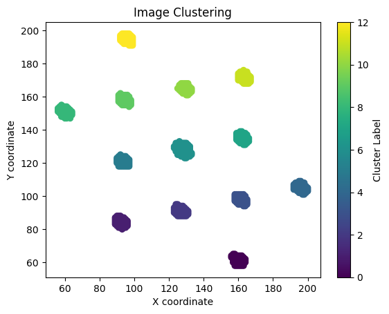
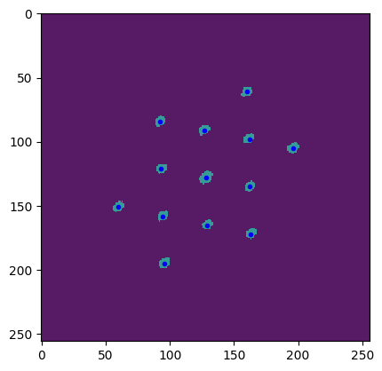

Notebook of Generating Figures in Paper Main content#
Download auto4dstem package#
import sys
#!{sys.executable} -m pip install -i https://test.pypi.org/simple/ Auto4DSTEM==0.7.1
!{sys.executable} -m pip install -U Auto4DSTEM
Requirement already satisfied: Auto4DSTEM in /home/shuyu/.conda/envs/HAWQ/lib/python3.10/site-packages (0.2.6)
Requirement already satisfied: importlib-metadata in /home/shuyu/.conda/envs/HAWQ/lib/python3.10/site-packages (from Auto4DSTEM) (8.5.0)
Requirement already satisfied: M3learning-Util in /home/shuyu/.conda/envs/HAWQ/lib/python3.10/site-packages (from Auto4DSTEM) (2.0.3)
Requirement already satisfied: cmcrameri==1.8 in /home/shuyu/.conda/envs/HAWQ/lib/python3.10/site-packages (from Auto4DSTEM) (1.8)
Requirement already satisfied: cupy-cuda12x==13.0.0 in /home/shuyu/.conda/envs/HAWQ/lib/python3.10/site-packages (from Auto4DSTEM) (13.0.0)
Requirement already satisfied: h5py in /home/shuyu/.conda/envs/HAWQ/lib/python3.10/site-packages (from Auto4DSTEM) (3.11.0)
Requirement already satisfied: matplotlib==3.6.2 in /home/shuyu/.conda/envs/HAWQ/lib/python3.10/site-packages (from Auto4DSTEM) (3.6.2)
Requirement already satisfied: numba==0.58.1 in /home/shuyu/.conda/envs/HAWQ/lib/python3.10/site-packages (from Auto4DSTEM) (0.58.1)
Requirement already satisfied: numpy==1.25.2 in /home/shuyu/.conda/envs/HAWQ/lib/python3.10/site-packages (from Auto4DSTEM) (1.25.2)
Requirement already satisfied: opencv-python-headless==4.11.0.86 in /home/shuyu/.conda/envs/HAWQ/lib/python3.10/site-packages (from Auto4DSTEM) (4.11.0.86)
Requirement already satisfied: py4DSTEM==0.14.9 in /home/shuyu/.conda/envs/HAWQ/lib/python3.10/site-packages (from Auto4DSTEM) (0.14.9)
Requirement already satisfied: pymatgen==2024.3.1 in /home/shuyu/.conda/envs/HAWQ/lib/python3.10/site-packages (from Auto4DSTEM) (2024.3.1)
Requirement already satisfied: scikit-image==0.19.3 in /home/shuyu/.conda/envs/HAWQ/lib/python3.10/site-packages (from Auto4DSTEM) (0.19.3)
Requirement already satisfied: scikit-learn==1.1.3 in /home/shuyu/.conda/envs/HAWQ/lib/python3.10/site-packages (from Auto4DSTEM) (1.1.3)
Requirement already satisfied: scipy==1.9.3 in /home/shuyu/.conda/envs/HAWQ/lib/python3.10/site-packages (from Auto4DSTEM) (1.9.3)
Requirement already satisfied: torch==2.2.0 in /home/shuyu/.conda/envs/HAWQ/lib/python3.10/site-packages (from Auto4DSTEM) (2.2.0)
Requirement already satisfied: tqdm==4.66.1 in /home/shuyu/.conda/envs/HAWQ/lib/python3.10/site-packages (from Auto4DSTEM) (4.66.1)
Requirement already satisfied: typing_extensions==4.8.0 in /home/shuyu/.conda/envs/HAWQ/lib/python3.10/site-packages (from Auto4DSTEM) (4.8.0)
Requirement already satisfied: packaging in /home/shuyu/.conda/envs/HAWQ/lib/python3.10/site-packages (from cmcrameri==1.8->Auto4DSTEM) (24.1)
Requirement already satisfied: fastrlock>=0.5 in /home/shuyu/.conda/envs/HAWQ/lib/python3.10/site-packages (from cupy-cuda12x==13.0.0->Auto4DSTEM) (0.8.2)
Requirement already satisfied: contourpy>=1.0.1 in /home/shuyu/.conda/envs/HAWQ/lib/python3.10/site-packages (from matplotlib==3.6.2->Auto4DSTEM) (1.3.0)
Requirement already satisfied: cycler>=0.10 in /home/shuyu/.conda/envs/HAWQ/lib/python3.10/site-packages (from matplotlib==3.6.2->Auto4DSTEM) (0.12.1)
Requirement already satisfied: fonttools>=4.22.0 in /home/shuyu/.conda/envs/HAWQ/lib/python3.10/site-packages (from matplotlib==3.6.2->Auto4DSTEM) (4.53.1)
Requirement already satisfied: kiwisolver>=1.0.1 in /home/shuyu/.conda/envs/HAWQ/lib/python3.10/site-packages (from matplotlib==3.6.2->Auto4DSTEM) (1.4.7)
Requirement already satisfied: pillow>=6.2.0 in /home/shuyu/.conda/envs/HAWQ/lib/python3.10/site-packages (from matplotlib==3.6.2->Auto4DSTEM) (10.4.0)
Requirement already satisfied: pyparsing>=2.2.1 in /home/shuyu/.conda/envs/HAWQ/lib/python3.10/site-packages (from matplotlib==3.6.2->Auto4DSTEM) (3.1.4)
Requirement already satisfied: python-dateutil>=2.7 in /home/shuyu/.conda/envs/HAWQ/lib/python3.10/site-packages (from matplotlib==3.6.2->Auto4DSTEM) (2.9.0.post0)
Requirement already satisfied: llvmlite<0.42,>=0.41.0dev0 in /home/shuyu/.conda/envs/HAWQ/lib/python3.10/site-packages (from numba==0.58.1->Auto4DSTEM) (0.41.1)
Requirement already satisfied: hdf5plugin>=4.1.3 in /home/shuyu/.conda/envs/HAWQ/lib/python3.10/site-packages (from py4DSTEM==0.14.9->Auto4DSTEM) (5.0.0)
Requirement already satisfied: ncempy>=1.8.1 in /home/shuyu/.conda/envs/HAWQ/lib/python3.10/site-packages (from py4DSTEM==0.14.9->Auto4DSTEM) (1.11.3)
Requirement already satisfied: scikit-optimize>=0.9.0 in /home/shuyu/.conda/envs/HAWQ/lib/python3.10/site-packages (from py4DSTEM==0.14.9->Auto4DSTEM) (0.10.2)
Requirement already satisfied: dill>=0.3.3 in /home/shuyu/.conda/envs/HAWQ/lib/python3.10/site-packages (from py4DSTEM==0.14.9->Auto4DSTEM) (0.3.8)
Requirement already satisfied: gdown>=4.7.1 in /home/shuyu/.conda/envs/HAWQ/lib/python3.10/site-packages (from py4DSTEM==0.14.9->Auto4DSTEM) (5.2.0)
Requirement already satisfied: dask>=2.3.0 in /home/shuyu/.conda/envs/HAWQ/lib/python3.10/site-packages (from py4DSTEM==0.14.9->Auto4DSTEM) (2024.9.0)
Requirement already satisfied: distributed>=2.3.0 in /home/shuyu/.conda/envs/HAWQ/lib/python3.10/site-packages (from py4DSTEM==0.14.9->Auto4DSTEM) (2024.9.0)
Requirement already satisfied: emdfile>=0.0.14 in /home/shuyu/.conda/envs/HAWQ/lib/python3.10/site-packages (from py4DSTEM==0.14.9->Auto4DSTEM) (0.0.15)
Requirement already satisfied: mpire>=2.7.1 in /home/shuyu/.conda/envs/HAWQ/lib/python3.10/site-packages (from py4DSTEM==0.14.9->Auto4DSTEM) (2.10.2)
Requirement already satisfied: threadpoolctl>=3.1.0 in /home/shuyu/.conda/envs/HAWQ/lib/python3.10/site-packages (from py4DSTEM==0.14.9->Auto4DSTEM) (3.5.0)
Requirement already satisfied: pylops>=2.1.0 in /home/shuyu/.conda/envs/HAWQ/lib/python3.10/site-packages (from py4DSTEM==0.14.9->Auto4DSTEM) (2.2.0)
Requirement already satisfied: colorspacious>=1.1.2 in /home/shuyu/.conda/envs/HAWQ/lib/python3.10/site-packages (from py4DSTEM==0.14.9->Auto4DSTEM) (1.1.2)
Requirement already satisfied: monty>=2024.2.2 in /home/shuyu/.conda/envs/HAWQ/lib/python3.10/site-packages (from pymatgen==2024.3.1->Auto4DSTEM) (2024.7.30)
Requirement already satisfied: networkx>=2.2 in /home/shuyu/.conda/envs/HAWQ/lib/python3.10/site-packages (from pymatgen==2024.3.1->Auto4DSTEM) (3.3)
Requirement already satisfied: palettable>=3.1.1 in /home/shuyu/.conda/envs/HAWQ/lib/python3.10/site-packages (from pymatgen==2024.3.1->Auto4DSTEM) (3.3.3)
Requirement already satisfied: pandas in /home/shuyu/.conda/envs/HAWQ/lib/python3.10/site-packages (from pymatgen==2024.3.1->Auto4DSTEM) (2.2.3)
Requirement already satisfied: plotly>=4.5.0 in /home/shuyu/.conda/envs/HAWQ/lib/python3.10/site-packages (from pymatgen==2024.3.1->Auto4DSTEM) (5.24.1)
Requirement already satisfied: pybtex in /home/shuyu/.conda/envs/HAWQ/lib/python3.10/site-packages (from pymatgen==2024.3.1->Auto4DSTEM) (0.24.0)
Requirement already satisfied: requests in /home/shuyu/.conda/envs/HAWQ/lib/python3.10/site-packages (from pymatgen==2024.3.1->Auto4DSTEM) (2.32.3)
Requirement already satisfied: ruamel.yaml>=0.17.0 in /home/shuyu/.conda/envs/HAWQ/lib/python3.10/site-packages (from pymatgen==2024.3.1->Auto4DSTEM) (0.18.6)
Requirement already satisfied: spglib>=2.0.2 in /home/shuyu/.conda/envs/HAWQ/lib/python3.10/site-packages (from pymatgen==2024.3.1->Auto4DSTEM) (2.5.0)
Requirement already satisfied: sympy in /home/shuyu/.conda/envs/HAWQ/lib/python3.10/site-packages (from pymatgen==2024.3.1->Auto4DSTEM) (1.13.3)
Requirement already satisfied: tabulate in /home/shuyu/.conda/envs/HAWQ/lib/python3.10/site-packages (from pymatgen==2024.3.1->Auto4DSTEM) (0.9.0)
Requirement already satisfied: uncertainties>=3.1.4 in /home/shuyu/.conda/envs/HAWQ/lib/python3.10/site-packages (from pymatgen==2024.3.1->Auto4DSTEM) (3.2.2)
Requirement already satisfied: joblib in /home/shuyu/.conda/envs/HAWQ/lib/python3.10/site-packages (from pymatgen==2024.3.1->Auto4DSTEM) (1.4.2)
Requirement already satisfied: imageio>=2.4.1 in /home/shuyu/.conda/envs/HAWQ/lib/python3.10/site-packages (from scikit-image==0.19.3->Auto4DSTEM) (2.35.1)
Requirement already satisfied: tifffile>=2019.7.26 in /home/shuyu/.conda/envs/HAWQ/lib/python3.10/site-packages (from scikit-image==0.19.3->Auto4DSTEM) (2024.8.30)
Requirement already satisfied: PyWavelets>=1.1.1 in /home/shuyu/.conda/envs/HAWQ/lib/python3.10/site-packages (from scikit-image==0.19.3->Auto4DSTEM) (1.7.0)
Requirement already satisfied: filelock in /home/shuyu/.conda/envs/HAWQ/lib/python3.10/site-packages (from torch==2.2.0->Auto4DSTEM) (3.16.1)
Requirement already satisfied: jinja2 in /home/shuyu/.conda/envs/HAWQ/lib/python3.10/site-packages (from torch==2.2.0->Auto4DSTEM) (3.1.4)
Requirement already satisfied: fsspec in /home/shuyu/.conda/envs/HAWQ/lib/python3.10/site-packages (from torch==2.2.0->Auto4DSTEM) (2024.9.0)
Requirement already satisfied: nvidia-cuda-nvrtc-cu12==12.1.105 in /home/shuyu/.conda/envs/HAWQ/lib/python3.10/site-packages (from torch==2.2.0->Auto4DSTEM) (12.1.105)
Requirement already satisfied: nvidia-cuda-runtime-cu12==12.1.105 in /home/shuyu/.conda/envs/HAWQ/lib/python3.10/site-packages (from torch==2.2.0->Auto4DSTEM) (12.1.105)
Requirement already satisfied: nvidia-cuda-cupti-cu12==12.1.105 in /home/shuyu/.conda/envs/HAWQ/lib/python3.10/site-packages (from torch==2.2.0->Auto4DSTEM) (12.1.105)
Requirement already satisfied: nvidia-cudnn-cu12==8.9.2.26 in /home/shuyu/.conda/envs/HAWQ/lib/python3.10/site-packages (from torch==2.2.0->Auto4DSTEM) (8.9.2.26)
Requirement already satisfied: nvidia-cublas-cu12==12.1.3.1 in /home/shuyu/.conda/envs/HAWQ/lib/python3.10/site-packages (from torch==2.2.0->Auto4DSTEM) (12.1.3.1)
Requirement already satisfied: nvidia-cufft-cu12==11.0.2.54 in /home/shuyu/.conda/envs/HAWQ/lib/python3.10/site-packages (from torch==2.2.0->Auto4DSTEM) (11.0.2.54)
Requirement already satisfied: nvidia-curand-cu12==10.3.2.106 in /home/shuyu/.conda/envs/HAWQ/lib/python3.10/site-packages (from torch==2.2.0->Auto4DSTEM) (10.3.2.106)
Requirement already satisfied: nvidia-cusolver-cu12==11.4.5.107 in /home/shuyu/.conda/envs/HAWQ/lib/python3.10/site-packages (from torch==2.2.0->Auto4DSTEM) (11.4.5.107)
Requirement already satisfied: nvidia-cusparse-cu12==12.1.0.106 in /home/shuyu/.conda/envs/HAWQ/lib/python3.10/site-packages (from torch==2.2.0->Auto4DSTEM) (12.1.0.106)
Requirement already satisfied: nvidia-nccl-cu12==2.19.3 in /home/shuyu/.conda/envs/HAWQ/lib/python3.10/site-packages (from torch==2.2.0->Auto4DSTEM) (2.19.3)
Requirement already satisfied: nvidia-nvtx-cu12==12.1.105 in /home/shuyu/.conda/envs/HAWQ/lib/python3.10/site-packages (from torch==2.2.0->Auto4DSTEM) (12.1.105)
Requirement already satisfied: triton==2.2.0 in /home/shuyu/.conda/envs/HAWQ/lib/python3.10/site-packages (from torch==2.2.0->Auto4DSTEM) (2.2.0)
Requirement already satisfied: nvidia-nvjitlink-cu12 in /home/shuyu/.conda/envs/HAWQ/lib/python3.10/site-packages (from nvidia-cusolver-cu12==11.4.5.107->torch==2.2.0->Auto4DSTEM) (12.6.68)
Requirement already satisfied: zipp>=3.20 in /home/shuyu/.conda/envs/HAWQ/lib/python3.10/site-packages (from importlib-metadata->Auto4DSTEM) (3.20.2)
Requirement already satisfied: pygments in /home/shuyu/.conda/envs/HAWQ/lib/python3.10/site-packages (from M3learning-Util->Auto4DSTEM) (2.19.1)
Requirement already satisfied: wget in /home/shuyu/.conda/envs/HAWQ/lib/python3.10/site-packages (from M3learning-Util->Auto4DSTEM) (3.2)
Requirement already satisfied: opencv-python in /home/shuyu/.conda/envs/HAWQ/lib/python3.10/site-packages (from M3learning-Util->Auto4DSTEM) (4.10.0.84)
Requirement already satisfied: seaborn in /home/shuyu/.conda/envs/HAWQ/lib/python3.10/site-packages (from M3learning-Util->Auto4DSTEM) (0.13.2)
Requirement already satisfied: globus-cli in /home/shuyu/.conda/envs/HAWQ/lib/python3.10/site-packages (from M3learning-Util->Auto4DSTEM) (3.30.1)
Requirement already satisfied: datafed in /home/shuyu/.conda/envs/HAWQ/lib/python3.10/site-packages (from M3learning-Util->Auto4DSTEM) (3.0.0)
Requirement already satisfied: tensorflow in /home/shuyu/.conda/envs/HAWQ/lib/python3.10/site-packages (from M3learning-Util->Auto4DSTEM) (2.17.1)
Requirement already satisfied: pytest in /home/shuyu/.conda/envs/HAWQ/lib/python3.10/site-packages (from M3learning-Util->Auto4DSTEM) (8.3.3)
Requirement already satisfied: click>=8.1 in /home/shuyu/.conda/envs/HAWQ/lib/python3.10/site-packages (from dask>=2.3.0->py4DSTEM==0.14.9->Auto4DSTEM) (8.1.7)
Requirement already satisfied: cloudpickle>=3.0.0 in /home/shuyu/.conda/envs/HAWQ/lib/python3.10/site-packages (from dask>=2.3.0->py4DSTEM==0.14.9->Auto4DSTEM) (3.0.0)
Requirement already satisfied: partd>=1.4.0 in /home/shuyu/.conda/envs/HAWQ/lib/python3.10/site-packages (from dask>=2.3.0->py4DSTEM==0.14.9->Auto4DSTEM) (1.4.2)
Requirement already satisfied: pyyaml>=5.3.1 in /home/shuyu/.conda/envs/HAWQ/lib/python3.10/site-packages (from dask>=2.3.0->py4DSTEM==0.14.9->Auto4DSTEM) (6.0.2)
Requirement already satisfied: toolz>=0.10.0 in /home/shuyu/.conda/envs/HAWQ/lib/python3.10/site-packages (from dask>=2.3.0->py4DSTEM==0.14.9->Auto4DSTEM) (0.12.1)
Requirement already satisfied: locket>=1.0.0 in /home/shuyu/.conda/envs/HAWQ/lib/python3.10/site-packages (from distributed>=2.3.0->py4DSTEM==0.14.9->Auto4DSTEM) (1.0.0)
Requirement already satisfied: msgpack>=1.0.2 in /home/shuyu/.conda/envs/HAWQ/lib/python3.10/site-packages (from distributed>=2.3.0->py4DSTEM==0.14.9->Auto4DSTEM) (1.1.0)
Requirement already satisfied: psutil>=5.8.0 in /home/shuyu/.conda/envs/HAWQ/lib/python3.10/site-packages (from distributed>=2.3.0->py4DSTEM==0.14.9->Auto4DSTEM) (5.9.0)
Requirement already satisfied: sortedcontainers>=2.0.5 in /home/shuyu/.conda/envs/HAWQ/lib/python3.10/site-packages (from distributed>=2.3.0->py4DSTEM==0.14.9->Auto4DSTEM) (2.4.0)
Requirement already satisfied: tblib>=1.6.0 in /home/shuyu/.conda/envs/HAWQ/lib/python3.10/site-packages (from distributed>=2.3.0->py4DSTEM==0.14.9->Auto4DSTEM) (3.0.0)
Requirement already satisfied: tornado>=6.2.0 in /home/shuyu/.conda/envs/HAWQ/lib/python3.10/site-packages (from distributed>=2.3.0->py4DSTEM==0.14.9->Auto4DSTEM) (6.4.1)
Requirement already satisfied: urllib3>=1.26.5 in /home/shuyu/.conda/envs/HAWQ/lib/python3.10/site-packages (from distributed>=2.3.0->py4DSTEM==0.14.9->Auto4DSTEM) (2.2.3)
Requirement already satisfied: zict>=3.0.0 in /home/shuyu/.conda/envs/HAWQ/lib/python3.10/site-packages (from distributed>=2.3.0->py4DSTEM==0.14.9->Auto4DSTEM) (3.0.0)
Requirement already satisfied: beautifulsoup4 in /home/shuyu/.conda/envs/HAWQ/lib/python3.10/site-packages (from gdown>=4.7.1->py4DSTEM==0.14.9->Auto4DSTEM) (4.12.3)
Requirement already satisfied: MarkupSafe>=2.0 in /home/shuyu/.conda/envs/HAWQ/lib/python3.10/site-packages (from jinja2->torch==2.2.0->Auto4DSTEM) (2.1.5)
Requirement already satisfied: tenacity>=6.2.0 in /home/shuyu/.conda/envs/HAWQ/lib/python3.10/site-packages (from plotly>=4.5.0->pymatgen==2024.3.1->Auto4DSTEM) (9.0.0)
Requirement already satisfied: six>=1.5 in /home/shuyu/.conda/envs/HAWQ/lib/python3.10/site-packages (from python-dateutil>=2.7->matplotlib==3.6.2->Auto4DSTEM) (1.16.0)
Requirement already satisfied: ruamel.yaml.clib>=0.2.7 in /home/shuyu/.conda/envs/HAWQ/lib/python3.10/site-packages (from ruamel.yaml>=0.17.0->pymatgen==2024.3.1->Auto4DSTEM) (0.2.8)
Requirement already satisfied: pyaml>=16.9 in /home/shuyu/.conda/envs/HAWQ/lib/python3.10/site-packages (from scikit-optimize>=0.9.0->py4DSTEM==0.14.9->Auto4DSTEM) (24.7.0)
Requirement already satisfied: prompt-toolkit>=2 in /home/shuyu/.conda/envs/HAWQ/lib/python3.10/site-packages (from datafed->M3learning-Util->Auto4DSTEM) (3.0.43)
Requirement already satisfied: protobuf>=4.21.1 in /home/shuyu/.conda/envs/HAWQ/lib/python3.10/site-packages (from datafed->M3learning-Util->Auto4DSTEM) (4.25.5)
Requirement already satisfied: pyzmq>=16 in /home/shuyu/.conda/envs/HAWQ/lib/python3.10/site-packages (from datafed->M3learning-Util->Auto4DSTEM) (25.1.2)
Requirement already satisfied: charset-normalizer<4,>=2 in /home/shuyu/.conda/envs/HAWQ/lib/python3.10/site-packages (from requests->pymatgen==2024.3.1->Auto4DSTEM) (3.3.2)
Requirement already satisfied: idna<4,>=2.5 in /home/shuyu/.conda/envs/HAWQ/lib/python3.10/site-packages (from requests->pymatgen==2024.3.1->Auto4DSTEM) (3.10)
Requirement already satisfied: certifi>=2017.4.17 in /home/shuyu/.conda/envs/HAWQ/lib/python3.10/site-packages (from requests->pymatgen==2024.3.1->Auto4DSTEM) (2024.8.30)
Requirement already satisfied: globus-sdk==3.44.0 in /home/shuyu/.conda/envs/HAWQ/lib/python3.10/site-packages (from globus-cli->M3learning-Util->Auto4DSTEM) (3.44.0)
Requirement already satisfied: jmespath==1.0.1 in /home/shuyu/.conda/envs/HAWQ/lib/python3.10/site-packages (from globus-cli->M3learning-Util->Auto4DSTEM) (1.0.1)
Requirement already satisfied: pyjwt<3.0.0,>=2.0.0 in /home/shuyu/.conda/envs/HAWQ/lib/python3.10/site-packages (from pyjwt[crypto]<3.0.0,>=2.0.0->globus-sdk==3.44.0->globus-cli->M3learning-Util->Auto4DSTEM) (2.9.0)
Requirement already satisfied: cryptography!=3.4.0,>=3.3.1 in /home/shuyu/.conda/envs/HAWQ/lib/python3.10/site-packages (from globus-sdk==3.44.0->globus-cli->M3learning-Util->Auto4DSTEM) (43.0.1)
Requirement already satisfied: pytz>=2020.1 in /home/shuyu/.conda/envs/HAWQ/lib/python3.10/site-packages (from pandas->pymatgen==2024.3.1->Auto4DSTEM) (2024.2)
Requirement already satisfied: tzdata>=2022.7 in /home/shuyu/.conda/envs/HAWQ/lib/python3.10/site-packages (from pandas->pymatgen==2024.3.1->Auto4DSTEM) (2024.1)
Requirement already satisfied: latexcodec>=1.0.4 in /home/shuyu/.conda/envs/HAWQ/lib/python3.10/site-packages (from pybtex->pymatgen==2024.3.1->Auto4DSTEM) (3.0.0)
Requirement already satisfied: iniconfig in /home/shuyu/.conda/envs/HAWQ/lib/python3.10/site-packages (from pytest->M3learning-Util->Auto4DSTEM) (2.0.0)
Requirement already satisfied: pluggy<2,>=1.5 in /home/shuyu/.conda/envs/HAWQ/lib/python3.10/site-packages (from pytest->M3learning-Util->Auto4DSTEM) (1.5.0)
Requirement already satisfied: exceptiongroup>=1.0.0rc8 in /home/shuyu/.conda/envs/HAWQ/lib/python3.10/site-packages (from pytest->M3learning-Util->Auto4DSTEM) (1.2.0)
Requirement already satisfied: tomli>=1 in /home/shuyu/.conda/envs/HAWQ/lib/python3.10/site-packages (from pytest->M3learning-Util->Auto4DSTEM) (2.0.1)
Requirement already satisfied: mpmath<1.4,>=1.1.0 in /home/shuyu/.conda/envs/HAWQ/lib/python3.10/site-packages (from sympy->pymatgen==2024.3.1->Auto4DSTEM) (1.3.0)
Requirement already satisfied: absl-py>=1.0.0 in /home/shuyu/.conda/envs/HAWQ/lib/python3.10/site-packages (from tensorflow->M3learning-Util->Auto4DSTEM) (2.1.0)
Requirement already satisfied: astunparse>=1.6.0 in /home/shuyu/.conda/envs/HAWQ/lib/python3.10/site-packages (from tensorflow->M3learning-Util->Auto4DSTEM) (1.6.3)
Requirement already satisfied: flatbuffers>=24.3.25 in /home/shuyu/.conda/envs/HAWQ/lib/python3.10/site-packages (from tensorflow->M3learning-Util->Auto4DSTEM) (24.3.25)
Requirement already satisfied: gast!=0.5.0,!=0.5.1,!=0.5.2,>=0.2.1 in /home/shuyu/.conda/envs/HAWQ/lib/python3.10/site-packages (from tensorflow->M3learning-Util->Auto4DSTEM) (0.6.0)
Requirement already satisfied: google-pasta>=0.1.1 in /home/shuyu/.conda/envs/HAWQ/lib/python3.10/site-packages (from tensorflow->M3learning-Util->Auto4DSTEM) (0.2.0)
Requirement already satisfied: libclang>=13.0.0 in /home/shuyu/.conda/envs/HAWQ/lib/python3.10/site-packages (from tensorflow->M3learning-Util->Auto4DSTEM) (18.1.1)
Requirement already satisfied: ml-dtypes<0.5.0,>=0.3.1 in /home/shuyu/.conda/envs/HAWQ/lib/python3.10/site-packages (from tensorflow->M3learning-Util->Auto4DSTEM) (0.4.1)
Requirement already satisfied: opt-einsum>=2.3.2 in /home/shuyu/.conda/envs/HAWQ/lib/python3.10/site-packages (from tensorflow->M3learning-Util->Auto4DSTEM) (3.4.0)
Requirement already satisfied: setuptools in /home/shuyu/.conda/envs/HAWQ/lib/python3.10/site-packages (from tensorflow->M3learning-Util->Auto4DSTEM) (75.1.0)
Requirement already satisfied: termcolor>=1.1.0 in /home/shuyu/.conda/envs/HAWQ/lib/python3.10/site-packages (from tensorflow->M3learning-Util->Auto4DSTEM) (2.5.0)
Requirement already satisfied: wrapt>=1.11.0 in /home/shuyu/.conda/envs/HAWQ/lib/python3.10/site-packages (from tensorflow->M3learning-Util->Auto4DSTEM) (1.16.0)
Requirement already satisfied: grpcio<2.0,>=1.24.3 in /home/shuyu/.conda/envs/HAWQ/lib/python3.10/site-packages (from tensorflow->M3learning-Util->Auto4DSTEM) (1.67.1)
Requirement already satisfied: tensorboard<2.18,>=2.17 in /home/shuyu/.conda/envs/HAWQ/lib/python3.10/site-packages (from tensorflow->M3learning-Util->Auto4DSTEM) (2.17.1)
Requirement already satisfied: keras>=3.2.0 in /home/shuyu/.conda/envs/HAWQ/lib/python3.10/site-packages (from tensorflow->M3learning-Util->Auto4DSTEM) (3.6.0)
Requirement already satisfied: tensorflow-io-gcs-filesystem>=0.23.1 in /home/shuyu/.conda/envs/HAWQ/lib/python3.10/site-packages (from tensorflow->M3learning-Util->Auto4DSTEM) (0.37.1)
Requirement already satisfied: wheel<1.0,>=0.23.0 in /home/shuyu/.conda/envs/HAWQ/lib/python3.10/site-packages (from astunparse>=1.6.0->tensorflow->M3learning-Util->Auto4DSTEM) (0.44.0)
Requirement already satisfied: rich in /home/shuyu/.conda/envs/HAWQ/lib/python3.10/site-packages (from keras>=3.2.0->tensorflow->M3learning-Util->Auto4DSTEM) (13.9.4)
Requirement already satisfied: namex in /home/shuyu/.conda/envs/HAWQ/lib/python3.10/site-packages (from keras>=3.2.0->tensorflow->M3learning-Util->Auto4DSTEM) (0.0.8)
Requirement already satisfied: optree in /home/shuyu/.conda/envs/HAWQ/lib/python3.10/site-packages (from keras>=3.2.0->tensorflow->M3learning-Util->Auto4DSTEM) (0.13.0)
Requirement already satisfied: wcwidth in /home/shuyu/.conda/envs/HAWQ/lib/python3.10/site-packages (from prompt-toolkit>=2->datafed->M3learning-Util->Auto4DSTEM) (0.2.5)
Requirement already satisfied: markdown>=2.6.8 in /home/shuyu/.conda/envs/HAWQ/lib/python3.10/site-packages (from tensorboard<2.18,>=2.17->tensorflow->M3learning-Util->Auto4DSTEM) (3.7)
Requirement already satisfied: tensorboard-data-server<0.8.0,>=0.7.0 in /home/shuyu/.conda/envs/HAWQ/lib/python3.10/site-packages (from tensorboard<2.18,>=2.17->tensorflow->M3learning-Util->Auto4DSTEM) (0.7.2)
Requirement already satisfied: werkzeug>=1.0.1 in /home/shuyu/.conda/envs/HAWQ/lib/python3.10/site-packages (from tensorboard<2.18,>=2.17->tensorflow->M3learning-Util->Auto4DSTEM) (3.1.1)
Requirement already satisfied: soupsieve>1.2 in /home/shuyu/.conda/envs/HAWQ/lib/python3.10/site-packages (from beautifulsoup4->gdown>=4.7.1->py4DSTEM==0.14.9->Auto4DSTEM) (2.6)
Requirement already satisfied: PySocks!=1.5.7,>=1.5.6 in /home/shuyu/.conda/envs/HAWQ/lib/python3.10/site-packages (from requests[socks]->gdown>=4.7.1->py4DSTEM==0.14.9->Auto4DSTEM) (1.7.1)
Requirement already satisfied: cffi>=1.12 in /home/shuyu/.conda/envs/HAWQ/lib/python3.10/site-packages (from cryptography!=3.4.0,>=3.3.1->globus-sdk==3.44.0->globus-cli->M3learning-Util->Auto4DSTEM) (1.17.1)
Requirement already satisfied: markdown-it-py>=2.2.0 in /home/shuyu/.conda/envs/HAWQ/lib/python3.10/site-packages (from rich->keras>=3.2.0->tensorflow->M3learning-Util->Auto4DSTEM) (3.0.0)
Requirement already satisfied: pycparser in /home/shuyu/.conda/envs/HAWQ/lib/python3.10/site-packages (from cffi>=1.12->cryptography!=3.4.0,>=3.3.1->globus-sdk==3.44.0->globus-cli->M3learning-Util->Auto4DSTEM) (2.22)
Requirement already satisfied: mdurl~=0.1 in /home/shuyu/.conda/envs/HAWQ/lib/python3.10/site-packages (from markdown-it-py>=2.2.0->rich->keras>=3.2.0->tensorflow->M3learning-Util->Auto4DSTEM) (0.1.2)
load packages#
%load_ext autoreload
%autoreload 2
from m3util.viz.layout import layout_subfigures_inches,scalebar,imagemap
from m3util.viz.images import display_image
from m3util.viz.text import labelfigs
from auto4dstem.nn.CC_ST_AE import revise_size_on_affine_gpu,spatial_trans
from auto4dstem.nn.Train_Function import TrainClass
from auto4dstem.Viz.util import mask_class, mask_function,find_nearby_dot_group,custom_formatter
from auto4dstem.Viz.viz import set_format_Auto4D, visualize_simulate_result,\
visual_performance_plot,normalized_strain_matrices,image_with_colorbar,generate_plot_fig3,\
extract_ele_from_dic_fig3,normalized_comparison_fig3,hist_plotter
from m3util.util.IO import download_files_from_txt
import os
import numpy as np
import h5py
import matplotlib.pyplot as plt
import pickle
import matplotlib.colors as mcolors
from cmcrameri import cm
from matplotlib.ticker import FuncFormatter
import matplotlib.patches as patches
Download pretrained data from Zenodo#
folder_path = 'Figures_4_notebook'
file_download = "files_generate_figures_for_notebook.txt"
# check where are you from the root path
download_files_from_txt(file_download,folder_path)
---------------------------------------------------------------------------
FileNotFoundError Traceback (most recent call last)
Cell In[5], line 2
1 # check where are you from the root path
----> 2 download_files_from_txt(file_download,folder_path)
File ~/.conda/envs/HAWQ/lib/python3.10/site-packages/m3util/util/IO.py:77, in download_files_from_txt(url_file, download_path)
74 delay = 1
76 # Open the text file containing URLs
---> 77 with open(url_file, "r") as file:
78 urls = file.readlines()
80 # Iterate over each URL
FileNotFoundError: [Errno 2] No such file or directory: 'files_generate_figures_for_notebook.txt'
# turn the load_data_from_file to be False to directly load the images without downloading the 4dstem data
load_data_from_file = False
if load_data_from_file:
# set the 4dstem data path if needed
data_path = os.path.abspath("Simulated_4dstem/Extremely_Noisy_4DSTEM_Strain_Mapping_Using_CC_ST_AE_Simulated/polycrystal_output4D.mat")
with h5py.File(data_path, 'r') as f: # Open the file in read mode
stem4d_data = f['output4D'][0,0]
stem4d_data = stem4d_data*1e5/4
test_data = np.copy(stem4d_data)
else:
test_data = np.load(f'{folder_path}/sample_img.npy')
Generate Strained Images for Figure 1#
# set correct image size for adding mask
mean_ = np.zeros([256,256])
# generate mask region
mask_0 = mask_function(mean_,radius=15,center_coordinates=(128,128))
# make image binary
test_data[test_data>=0.3]=1
test_data[test_data<0.3] = 0
# emphasize center spot
test_data[mask_0] = test_data[mask_0]*2
# Select color map to represest the color on spots before and after spatial transform
plasma = plt.cm.get_cmap('plasma', 256)
viridis = plt.cm.get_cmap('viridis', 256)
# Get the original plasma colormap
newcolors1 = plasma(np.linspace(0, 1, 256))
newcolors2 = viridis(np.linspace(0, 1, 256))
# make center spot black in each color map
white = np.array([0, 0, 0, 0])
black = np.array([0, 0, 0, 1])
# RGBA for white color
newcolors1[0, :] = white # Set the first row to white (for zeros)
newcolors2[0, :] = white
newcolors1[-1, :] = black # Set the last row to black (for zeros)
newcolors2[-1, :] = black
# Create a new colormap with the modified color
newcmp1 = mcolors.ListedColormap(newcolors1)
newcmp2 = mcolors.ListedColormap(newcolors2)
Apply scale on sample image#
sam_scale = spatial_trans(test_data,matrix = [[0.8,0,0],[0,0.8,0]],mask_0 = mask_0)


Shear#
sam_shear = spatial_trans(test_data,matrix = [[1,0.15,0],[0.15,1,0]])


Rotation#
sam_rotation = spatial_trans(test_data,matrix =[[0.866, 0.5 , 0],[-0.5,0.866, 0]])


# Visualize the affine transform on image
fig,ax=plt.subplots(1,3,figsize=(9,3))
for i in range(3):
ax[i].imshow(test_data,clim=[0,2],cmap=newcmp2,interpolation = 'none')
ax[0].imshow(sam_scale,clim=[0,2],cmap=newcmp1,interpolation = 'none')
ax[1].imshow(sam_shear,clim=[0,2],cmap=newcmp1,interpolation = 'none')
ax[2].imshow(sam_rotation,clim=[0,2],cmap=newcmp1,interpolation = 'none')
<matplotlib.image.AxesImage at 0x7f524c0ce6b0>

Genearte Figure 1#
# initial parameters of the figure
y_max = 2.8558
x_max = 4.3284
width = 1.3805
space_x = (x_max-3*width)/2.0
space_y = (y_max-2*width)
dict = {"4dstem": {"position":(0, width+space_y, width,width),"skip_margin": True},
"strain_4dstem": {"position":(width+space_x,width+space_y, width,width),"skip_margin": True},
"rotate_4dstem": {"position":(2*width+2*space_x,width+space_y, width,width),"skip_margin": True},
"scale": {"position":(0,0, width,width),"skip_margin": True},
"shear": {"position":(width+space_x,0, width,width),"skip_margin": True},
"rotation": {"position":(2*width+2*space_x,0, width,width),"skip_margin": True},
}
# Generate figure 1
fig, ax = layout_subfigures_inches(size=(4.3284, 2.8558 ), subfigures_dict=dict)
display_image(ax["4dstem"], f"{folder_path}/EMPAD_OG.jpg")
display_image(ax["strain_4dstem"], f"{folder_path}/EMPAD_Scaled.jpg")
display_image(ax["rotate_4dstem"], f"{folder_path}/EMPAD_Rotated.jpg")
ax['scale'].imshow(test_data,clim=[0,2],cmap=newcmp2,interpolation = 'none')
ax['scale'].imshow(sam_scale,clim=[0,2], cmap=newcmp1, alpha=0.9,interpolation = 'none')
ax['shear'].imshow(test_data,clim=[0,2],cmap=newcmp2,interpolation = 'none')
ax['shear'].imshow(sam_shear,clim=[0,2], cmap=newcmp1, alpha=0.9,interpolation = 'none')
ax['rotation'].imshow(test_data,clim=[0,2],cmap=newcmp2,interpolation = 'none')
ax['rotation'].imshow(sam_rotation,clim=[0,2], cmap=newcmp1, alpha=0.9,interpolation = 'none')
for idx, item in enumerate(list(dict.keys())):
ax[item].tick_params(length=0)
ax[item].set_xticklabels([])
ax[item].set_yticklabels([])
for spine in ax[item].spines.values():
spine.set_linewidth(0.5) # Boundary size (thicker)
# ax[item].tick_params(left=False, bottom=False, labelleft=False, labelbottom=False)
labelfigs(ax[item],
number = idx,
style = 'b',
loc ='tl',
size=10,
inset_fraction=(0.1, 0.1)
)
plt.savefig('figure1.png',dpi=600)
plt.savefig('figure1.svg',dpi=600)

Figure 2#
dict = {
"Model_Structure": {"position":(0, 0, x_max,y_max),"skip_margin": True},
}
y_max = 2.29
x_max = 5.76
fig, ax = layout_subfigures_inches(size=(x_max, y_max), subfigures_dict=dict)
display_image(ax["Model_Structure"], f"{folder_path}/figure-2-docx.jpg")
plt.savefig('figure2.png',dpi=600)
plt.savefig('figure2.svg',dpi=600)

Generate Figure 3#
# load the noise image and put in list
hf = h5py.File(f'{folder_path}/[0, 0.25, 0.6].h5','r')
with open(f'{folder_path}/MAE_list_simulated_4dstem.pickle', 'rb') as pickle_file:
mae_list = pickle.load(pickle_file)
# load the strain label of simulated 4dstem
data_list = [f"{folder_path}/Label_strain_xx.npy", f"{folder_path}/Label_strain_yy.npy",
f"{folder_path}/Label_shear_xy.npy", f"{folder_path}/Label_rotation.npy"]
# figure parameters
y_max = 6.95
x_max = 5.21
width = 0.9722
width_label_1 = 1.1917
width_label_2 = 1.1932
height_1 = 0.9722
height_2 = 1.0556
height_3 = 0.8333
x_initial_1 = 0.7291
x_end_1 = 4.2574
x_initial_2 = 0.1656
x_end_2 = 4.969
y_end_2 = y_max - 0.1344
y_end_1 = y_max - 3.3199
y_initial = y_max - 6.7993
space_x_1 = (x_end_1 - x_initial_1 - 3*width)/2.0
space_x_2 = (x_end_2 - x_initial_2 - 4*width)/3.0
space_y_1 = (y_end_2 - y_end_1 - height_1*2 - height_2)/2
space_y_2 = (y_end_1 - y_initial - height_2*2 - height_3)/3
# set the position of each figure
dict = {"1": {"position":(x_initial_1, y_end_1+height_1+height_2+2*space_y_1, width,height_1),"skip_margin": True},
"2": {"position":(x_initial_1+width+space_x_1,y_end_1+height_1+height_2+2*space_y_1, width,height_1),"skip_margin": True},
"3": {"position":(x_initial_1+2*width+2*space_x_1,y_end_1+height_1+height_2+2*space_y_1, width,height_1),"skip_margin": True},
"4": {"position":(x_initial_2,y_end_1+height_2+space_y_1, width_label_1,height_1),"skip_margin": True},
"5": {"position":(x_initial_2+width+space_x_2,y_end_1+height_2+space_y_1, width_label_1,height_1),"skip_margin": True},
"6": {"position":(x_initial_2+2*width+2*space_x_2,y_end_1+height_2+space_y_1, width_label_1,height_1),"skip_margin": True},
"7": {"position":(x_initial_2+3*width+3*space_x_2,y_end_1+height_2+space_y_1, width_label_2,height_1),"skip_margin": True},
"8": {"position":(x_initial_2,y_end_1, width,height_2),"skip_margin": True},
"9": {"position":(x_initial_2+width+space_x_2,y_end_1, width,height_2),"skip_margin": True},
"10": {"position":(x_initial_2+2*width+2*space_x_2,y_end_1, width,height_2),"skip_margin": True},
"11": {"position":(x_initial_2+3*width+3*space_x_2,y_end_1, width,height_2),"skip_margin": True},
"12": {"position":(x_initial_2,y_initial+2*space_y_2+height_2+height_3, width,height_2),"skip_margin": True},
"13": {"position":(x_initial_2+width+space_x_2,y_initial+2*space_y_2+height_2+height_3, width,height_2),"skip_margin": True},
"14": {"position":(x_initial_2+2*width+2*space_x_2,y_initial+2*space_y_2+height_2+height_3, width,height_2),"skip_margin": True},
"15": {"position":(x_initial_2+3*width+3*space_x_2,y_initial+2*space_y_2+height_2+height_3, width,height_2),"skip_margin": True},
"16": {"position":(x_initial_2,y_initial+space_y_2+height_3, width,height_2),"skip_margin": True},
"17": {"position":(x_initial_2+width+space_x_2,y_initial+space_y_2+height_3, width,height_2),"skip_margin": True},
"18": {"position":(x_initial_2+2*width+2*space_x_2,y_initial+space_y_2+height_3, width,height_2),"skip_margin": True},
"19": {"position":(x_initial_2+3*width+3*space_x_2,y_initial+space_y_2+height_3, width,height_2),"skip_margin": True},
"20": {"position":(x_initial_2,y_initial, width,height_3),"skip_margin": True},
"21": {"position":(x_initial_2+width+space_x_2,y_initial, width,height_3),"skip_margin": True},
"22": {"position":(x_initial_2+2*width+2*space_x_2,y_initial, width,height_3),"skip_margin": True},
"23": {"position":(x_initial_2+3*width+3*space_x_2,y_initial, width,height_3),"skip_margin": True},
"24": {"position":(0.8151,y_max-3.9217,0.2778,0.2778),"skip_margin": True},
"25": {"position":(0.8151,y_max-5.2041,0.2778,0.3303),"skip_margin": True},
"26": {"position":(0.2746,y_max-6.3745,0.25,0.25),"skip_margin": True},
"27": {"position":(0.8914,y_max-6.7889,0.2222,0.2642),"skip_margin": True},
}
# set save figure format
save_format = 'png'
# set text positions to each figure
xtext_xaxis = 0.5
xtext_yaxis = -0.02
ytext_xaxis = -0.1
ytext_yaxis = 0.5
text_font = 5
star_x = 20
star_y = 45
# set text type of each figure
color_list = ['blue','green','red']
xtext_list = ['Noise-Free', '25% Poisson', '60% Poisson']
# generate the figure
fig, ax = layout_subfigures_inches(size=(x_max, y_max ), subfigures_dict=dict)
# generate image with different noise
for i, key in enumerate(list(hf.keys())):
ax[str(i+1)].imshow(hf[key],clim=[0,1])
# generate strain map of the label
for i in range(4,8):
ax['4'].plot(star_x, star_y, marker='*', markersize=5, linestyle='None')
tmp = np.load(data_list[i-4])
if i<7:
clim = [-0.03,0.03]
set_ticks = [-0.03,0,0.03]
percentage = True
else:
clim = [-40,30]
set_ticks = [-40,0,30]
percentage = False
label_rotation = np.rad2deg(tmp)
# calculate mean value of label rotation in reference region 30,60,10,40
label_ref_rotation = np.mean(label_rotation[30:60,10:40])
# calculate corresponding rotation based on reference
tmp = label_rotation - label_ref_rotation
image_with_colorbar(ax[str(i)],
tmp,
cmap = cm.vik,
clim = clim,
percentage = percentage,
set_ticks = set_ticks,
pad_tick = 0.4,
tick_size = 5)
# genearte histogram of the label
for i in range(8,12):
tmp = np.load(data_list[i-8])
if i<11:
clim = [-0.03,0.03]
else:
clim = [-40,30]
label_rotation = np.rad2deg(tmp)
# calculate mean value of label rotation in reference region 30,60,10,40
label_ref_rotation = np.mean(label_rotation[30:60,10:40])
# calculate corresponding rotation based on reference
tmp = label_rotation - label_ref_rotation
hist_plotter(ax[str(i)],tmp,clim = clim)
if i<11:
ax[str(i)].set_xticks([-0.03,0.03])
else:
ax[str(i)].set_xticks([-40,30])
ax[str(i)].set_yticks([0,1])
# add bar to the figure:
for i in range(3):
bar = patches.Rectangle((70, 220), width=116, height=10, color=color_list[i], alpha=0.6)
ax[str(i+1)].add_patch(bar)
xtext = xtext_list[i]
for i in range(8,24):
if i<20:
ytext = 'Normalized Counts'
xtext = 'Strain'
if (i+1)%4 ==0:
xtext = 'Rotation'
else:
xtext = 'Noise Intensity'
ytext = 'MAE'
ax[str(i)].text(ytext_xaxis, ytext_yaxis, ytext, transform=ax[str(i)].transAxes,
ha='left', va='center', fontsize=text_font, rotation='vertical')
ax[str(i)].text(xtext_xaxis, xtext_yaxis, xtext, transform=ax[str(i)].transAxes,
ha='center', va='top', fontsize=text_font)
ax[str(i)].tick_params(axis = 'y', labelsize=5, pad = 0.5, width = 0.25)
ax[str(i)].tick_params(axis = 'x', labelsize=5, pad = 0.5, width = 0.25)
# generate different bkg noise result
ax_list = []
for i in range(12,20):
ax_list.append(ax[str(i)])
if i == 15 or i==19:
ax[str(i)].set_xticks([-40,30])
else:
ax[str(i)].set_xticks([-0.03,0.03])
ax[str(i)].set_yticks([0,1])
normalized_comparison_fig3(ax_list,folder_path)
# generate plot
for i in range(20,24):
if i == 23:
set_yticks = [0,1.4]
ylim = [0,1.75]
elif i==22:
set_yticks = [0,4e-3]
ylim = [0,4e-3]
else:
set_yticks = [0,5e-3]
ylim = [0,5e-3]
generate_plot_fig3(ax[str(i)],
x_list=extract_ele_from_dic_fig3(mae_list,0)[0],
auto=extract_ele_from_dic_fig3(mae_list,i-16)[1],
py4d=extract_ele_from_dic_fig3(mae_list,i-20)[1],
markersize = 1,
linewidth = 0.5,
set_xticks=[0,0.7],
set_yticks = set_yticks,
ylim = ylim
)
if i <23:
ax[str(i)].yaxis.set_major_formatter(FuncFormatter(custom_formatter))
display_image(ax["24"], f"{folder_path}/py4DSTEM_logo.png")
display_image(ax["25"], f"{folder_path}/auto4dstem_LOGO.png")
display_image(ax["26"], f"{folder_path}/py4DSTEM_logo.png")
display_image(ax["27"], f"{folder_path}/auto4dstem_LOGO.png")
for idx, item in enumerate(list(dict.keys())):
style = 'b'
if idx<3:
style = 'w'
if idx<7:
ax[item].tick_params(length=0)
if idx>6:
ax[item].tick_params(direction='in')
if idx<7:
ax[item].set_xticklabels([])
ax[item].set_yticklabels([])
for spine in ax[item].spines.values():
spine.set_linewidth(0.25) # Boundary size (thicker)
if idx<23:
labelfigs(ax[item],
number = idx,
style = style,
loc ='tl',
size=6,
inset_fraction=(0.1, 0.1)
)
plt.savefig(f'figure3.{save_format}',dpi=600)
# plt.savefig('figure1.svg',dpi=600)
100%|████████████████████████████████████████████████████████████████████████████████████████████| 65536/65536 [00:01<00:00, 45801.63it/s]
100%|████████████████████████████████████████████████████████████████████████████████████████████| 65536/65536 [00:01<00:00, 49862.43it/s]
100%|████████████████████████████████████████████████████████████████████████████████████████████| 65536/65536 [00:01<00:00, 39869.01it/s]

Generate Figure 4#
Generate ABF and ADF of experimental 4dstem#
generate_adf_abf = False
if generate_adf_abf:
data_path = os.path.abspath("Experimental_4dstem/Extremely_Noisy_4DSTEM_Strain_Mapping_Using_CC_ST_AE_Experimental/data_x256_y256_raw.npy")
stem4d_data = np.load(data_path) # Open the file in read mode
real_space = np.mean(stem4d_data.reshape(-1,256,256),axis=0)
diffraction_space = np.mean(stem4d_data.reshape(124,124,-1),axis=2)
mean_ = np.zeros([124,124])
mask_0 = mask_function(mean_,radius=10,center_coordinates=(62,62))
mask_1 = mask_function(mean_,radius=25,center_coordinates=(62,62))
mask_2 = mask_function(mean_,radius=50,center_coordinates=(62,62))
mask_3 = ~mask_1*mask_2
test_diff_bright = np.copy(diffraction_space)
test_diff_dark = np.copy(diffraction_space)
test_diff_bright[mask_0] = 0
test_diff_dark[~mask_3]=0
index_ = np.where(mask_0==1)
index_1 = np.where(mask_3 == 1)
white_center = stem4d_data[index_]
dark_center = stem4d_data[index_1]
avg_white = np.mean(white_center,axis=0)
avg_dark = np.mean(dark_center,axis=0)
else:
avg_white = np.load(f'{folder_path}/ABF_WS2WSe2.npy')
avg_dark = np.load(f'{folder_path}/ADF_WS2WSe2.npy')
fig,ax = plt.subplots(2,2,figsize=(6,5))
clim1 = [2.90e4,3.2e4]
clim2 = [50,90]
sc1 = ax[0][0].imshow(avg_white,clim = clim1,cmap = 'viridis')
cbar1 = plt.colorbar(sc1, ax=ax[0][0], shrink=0.65)
ax[0][1].hist(avg_white.reshape(-1),200,range = clim1);
sc2 = ax[1][0].imshow(avg_dark,clim = clim2,cmap = 'viridis')
cbar2 = plt.colorbar(sc2, ax=ax[1][0], shrink=0.65)
ax[1][1].hist(avg_dark.reshape(-1),200,range = clim2);
fig.tight_layout()
#plt.savefig('bright_dark_real_space.svg')

Strain parameters of experimental dataset#
y_max = 3.4
x_max = 5.28
width_1 = 1.0417
width_2 = 1.26
height_1 = 1.0417
height_2 = 1.09
x_initial_1 = 0.038
x_end_1 = 5.0178
y_end_1 = y_max - 0.547
y_end_2 = y_max - 0.055
y_initial_1 = y_max - 2.7759
y_initial_2 = y_max - 3.3744
space_x_1 = (x_end_1 - x_initial_1 - 4*width_1)/3.0
space_y_1 = (y_end_1 - y_initial_1 - height_1 - height_2)
space_y_2 = (y_end_2 - y_initial_2 - height_1*3)/2
# Load h5 file of the transformed sample, strain parameters and strain magitude of py4dstem and auto4dstem
data_path = os.path.abspath(f'{folder_path}/transformed_sample_of_index_[25820 32170 38520 44870 51220].h5')
strain_mag_path = os.path.abspath(f'{folder_path}/WS2WSe2_strain_maginitude_with_py4d.h5')
strain_path = os.path.abspath(f'{folder_path}/WS2WSe2_real_strain_list.h5')
# load the data from h5 file
h5 = h5py.File(data_path,'r')
h_strain_mag = h5py.File(strain_mag_path,'r')
h_strain = h5py.File(strain_path,'r')
# set position of the figure
dict = {"1": {"position":(x_initial_1, y_initial_2+2*space_y_2+2*height_1, width_2,height_1),"skip_margin": True},
"2": {"position":(x_initial_1+width_1+space_x_1,y_initial_2+2*space_y_2+2*height_1, width_2,height_1),"skip_margin": True},
"3": {"position":(x_initial_1,y_initial_2+space_y_2+height_1, width_1,height_1),"skip_margin": True},
"4": {"position":(x_initial_1+width_1+space_x_1,y_initial_2+space_y_2+height_1, width_1,height_1),"skip_margin": True},
"5": {"position":(x_initial_1,y_initial_2, width_1,height_1),"skip_margin": True},
"6": {"position":(x_initial_1+width_1+space_x_1,y_initial_2, width_1,height_1),"skip_margin": True},
"7": {"position":(x_initial_1+2*width_1+2*space_x_1,
y_initial_1+space_y_1+height_2, width_2,height_1),"skip_margin": True},
"8": {"position":(x_initial_1+3*width_1+3*space_x_1,
y_initial_1+space_y_1+height_2, width_2,height_1),"skip_margin": True},
"9": {"position":(x_initial_1+2*width_1+2*space_x_1,
y_initial_1, width_1,height_2),"skip_margin": True},
"10": {"position":(x_initial_1+3*width_1+3*space_x_1,
y_initial_1, width_1,height_2),"skip_margin": True},
"11": {"position":(1.5546,y_max - 0.5247, 0.2778,0.3277),"skip_margin": True},
"12": {"position":(2.8507,y_max - 1.0403, 0.2778,0.3277),"skip_margin": True},
"13": {"position":(4.2064,y_max - 0.9655, 0.2778,0.2778),"skip_margin": True},
}
# Generate the figure
fig, ax = layout_subfigures_inches(size=(x_max, y_max ), subfigures_dict=dict)
#imagemap(ax['1'],avg_dark,colorbars=True,clim=[50,90],cbar_number_format = '%2d')
image_with_colorbar(ax['1'],
avg_dark,
cmap = 'viridis',
clim = [50,90],
tick_size = 5,
set_ticks = [50,90],
pad_tick = 1,
cbar_linewidth = 0.1
)
image_with_colorbar(ax['2'],
h_strain['auto4d'][3][:],
cmap = cm.vikO,
clim = [0,60],
tick_size = 5,
set_ticks = [0,60],
pad_tick = 1,
cbar_linewidth = 0.1
)
for i in range(3,7):
ax[str(i)].imshow(h5['44870'][i-3])
image_with_colorbar(ax['7'],
h_strain_mag['auto4d'][:],
cmap = 'viridis',
clim = [-0.02,0.02],
percentage = True,
tick_size = 5,
set_ticks = [-0.02,0,0.02],
pad_tick = 0,
cbar_linewidth = 0.1
)
ax['9'].hist(h_strain_mag['auto4d'][:].reshape(-1),200,range = [-0.02,0.02]);
image_with_colorbar(ax['8'],
h_strain_mag['py4d'][:],
cmap = 'viridis',
clim = [-0.02,0.02],
percentage = True,
tick_size = 5,
set_ticks = [-0.02,0,0.02],
pad_tick = 0,
)
ax['10'].hist(h_strain_mag['py4d'][:].reshape(-1),200,range = [-0.02,0.02]);
display_image(ax["11"], f"{folder_path}/auto4dstem_logo_trans.png")
display_image(ax["12"], f"{folder_path}/auto4dstem_logo_trans.png")
display_image(ax["13"], f"{folder_path}/py4dstem_logo_trans.png")
for idx, item in enumerate(list(dict.keys())):
style = 'w'
if idx>7:
ax[item].tick_params(direction='in')
ax[item].set_xticks([-0.02,0,0.02])
ax[item].set_yticks([0,600])
ax[item].tick_params(axis = 'y', labelsize=5, pad = 0.5, width = 0.25)
ax[item].tick_params(axis = 'x', labelsize=5, pad = 0.5, width = 0.25)
style = 'b'
if idx<8:
ax[item].tick_params(length=0)
ax[item].set_xticklabels([])
ax[item].set_yticklabels([])
for spine in ax[item].spines.values():
spine.set_linewidth(0.25) # Boundary size (thicker
if idx<10:
labelfigs(ax[item],
number = idx,
style = style,
loc ='tl',
size=6,
inset_fraction=(0.1, 0.1)
)
plt.savefig(f'figure4.{save_format}',dpi=600)